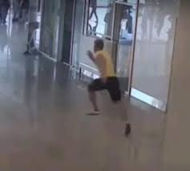

The Running Man
Varna, Bulgaria — July 2014

The Event
Lars Mittank arrived at Varna Airport to return home to Germany following a vacation. After a brief consultation with a doctor regarding an ear injury, Mittank was captured on CCTV sprinting out of the terminal, leaving all his belongings behind. He climbed a high fence and disappeared into a sunflower field, never to be seen again.
Evidence Locker


Current Theories
The Archive presents these theories based on Mittank's erratic final hours.
- Medical Psychosis A possible adverse reaction to the antibiotic Cefuroxime, prescribed for his ear, which list rare side effects including paranoia and hallucinations.
- Coerced Flight Mittank's final phone calls to his mother suggested he felt "hunted" and was being followed by four men, implying a physical threat at the airport.